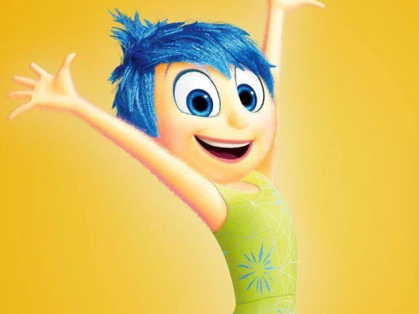
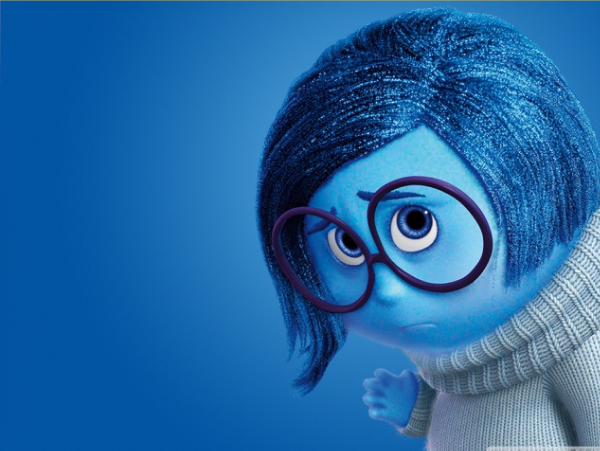
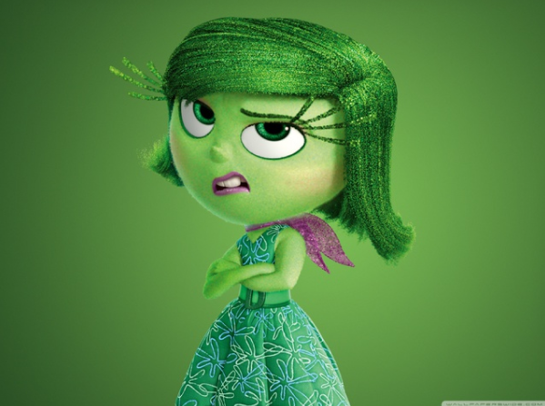
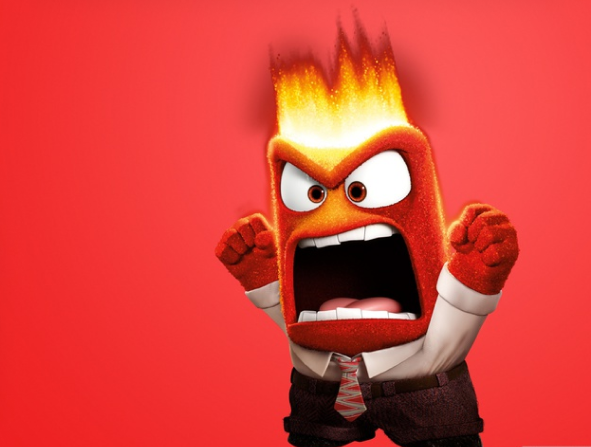
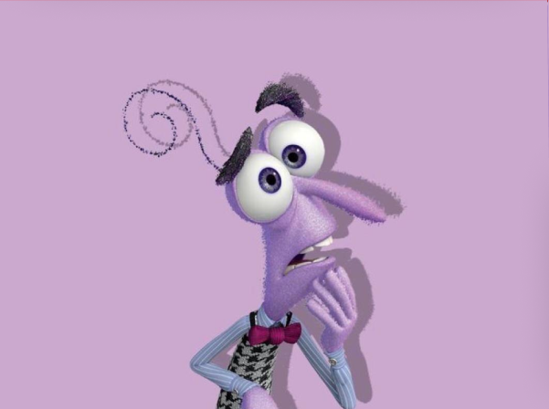
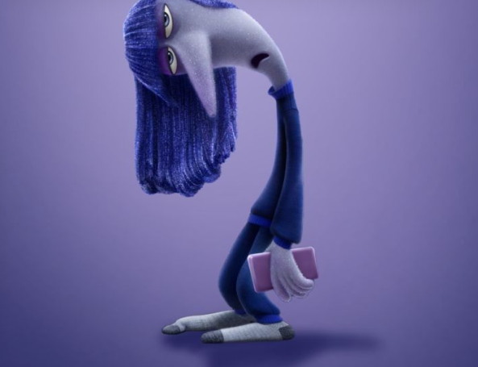
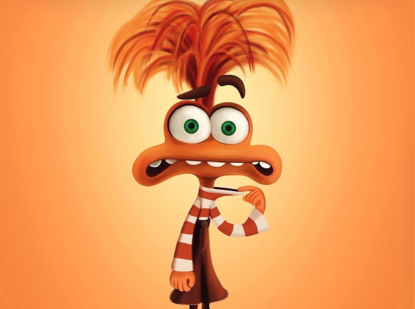
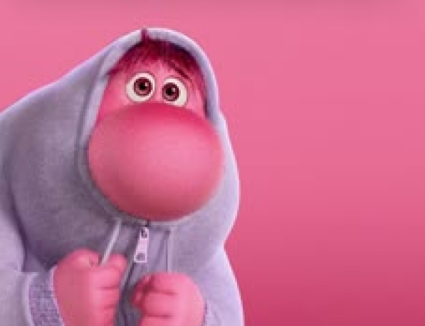
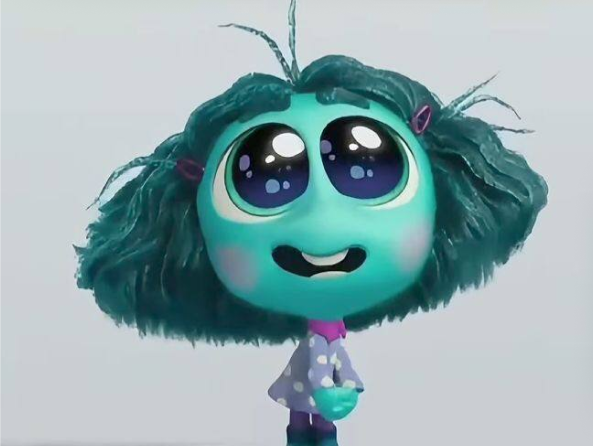

Радість — головна емоція в центрі управління. Вона оптимістична, енергійна та завжди намагається зробити так, щоб Райлі була щасливою. Радість вірить, що позитив — це найважливіше в житті, але поступово вчиться цінувати й інші почуття.
Смуток — спокійна, чутлива та трохи невпевнена емоція. Спочатку здається, що вона лише заважає, але згодом стає зрозуміло, що саме смуток допомагає Райлі приймати підтримку та розуміти свої справжні почуття.


Відраза стежить за тим, щоб Райлі не потрапила в неприємні або небезпечні ситуації. Вона має гарний смак і піклується про соціальний імідж дівчинки.
Гнів — вибуховий та принциповий. Він реагує тоді, коли щось здається несправедливим. Хоча іноді він діє занадто різко, його роль — захищати інтереси Райлі.


Страх обережний і передбачливий. Його завдання — оберігати Райлі від небезпеки. Він допомагає уникати ризикованих ситуацій та продумувати наслідки.
Страх обережний і передбачливий. Його завдання — оберігати Райлі від небезпеки. Він допомагає уникати ризикованихНудьга — байдужа, трохи іронічна емоція. Вона часто демонструє апатію й відстороненість, що характерно для підліткового віку. Проте саме вона допомагає Райлі виглядати спокійною та незалежною серед однолітків.ситуацій та продумувати наслідки.


Тривожність — нова головна рушійна сила в центрі управління. Вона постійно думає про майбутнє та можливі проблеми. Її мета — підготувати Райлі до всього, що може піти не так. Хоча вона хоче допомогти, іноді її надмірні переживання створюють ще більше напруги.
Сором — дуже чутлива та мовчазна емоція. Він з’являється в незручних соціальних ситуаціях і прагне «сховати» Райлі від уваги інших. Його роль — допомогти зберегти гідність, але іноді він заважає бути впевненою в собі.


Заздрість уважно спостерігає за іншими й порівнює Райлі з ними. Вона хоче, щоб дівчина була кращою, популярнішою та успішнішою. У помірній кількості заздрість може мотивувати до розвитку, але надмірність викликає невпевненість.